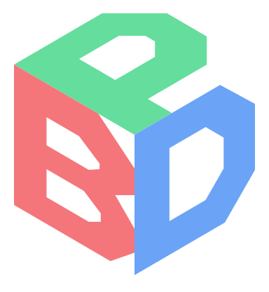

물리로 만든 움직임을 마인크래프트에서 재생하세요.
datapacks
/reload
/function my_animation:start
기록된 움직임을 재생합니다. 실제 월드와의 충돌은 편집기에서 미리 설정하세요. 스냅샷과 베드락은 제외됩니다.
Ctrl+N 새 프로젝트 · Ctrl+O 열기 · Ctrl+S .byphsics 저장
열기 .byphsics · .bdphysics · .bdengine · .bdstudio · .litematic · .schem · .schematic · .nbt · .bp · 기존 JSON저장 배치와 물리 설정을 전용 .byphsics 파일로 보관
Alt + 이동 화살표 드래그 물체를 유지하고 피봇 이동 · Z 기본 피봇으로 되돌리기
아무것도 선택하지 않으면 (0.5, 0.5, 0.5)에 추가하고, 물체를 선택하면 선택한 물체의 종류를 바꿉니다. T/R/S로 이동·회전·크기를 조절하세요. 이동은 0.5픽셀 간격이고 Shift를 누르면 미세 조절됩니다. 위아래로 이동하다 바닥에 닿으면 한 번 걸립니다.
질량, 마찰, 탄성을 바꾸고 힘 이벤트를 추가하세요. 중심에서 벗어난 적용점을 설정하면 회전도 발생해요. 재질 밀도는 연출용 상대값입니다.
재생을 누르면 물리를 계산하고 타임라인에 기록해요. 시간 막대를 움직여 원하는 순간을 확인하세요. 속성을 바꾸면 새로 기록해야 해요.
버전과 고유한 데이터팩 이름을 선택하세요. ZIP에는 시작·일시정지·재개·초기화·제거 함수와 프로젝트 JSON이 포함돼요.
구간 밖은 1× · 미리보기와 데이터팩에 적용